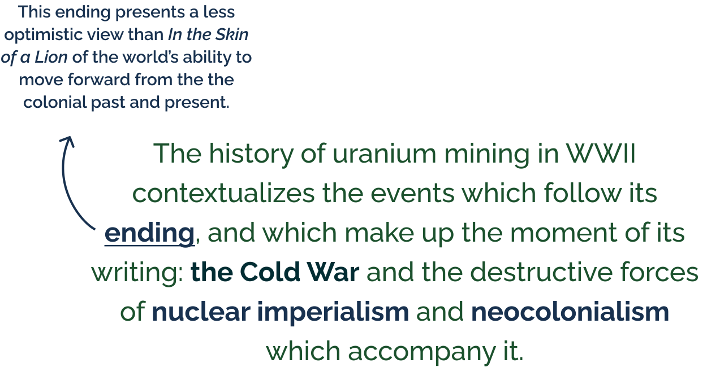

Chapter 2
Mining and the Subversion of Progress in The English Patient
Context

published in 1992
set in Florence, Italy, in the late 1940s
follows four people displaced by WWII as they shelter in an Italian villa
Chapter 2 Argument
![At the end of The English Patient, protagonist Kirpal Singh—an Indian Sikh sapper in the British Army—learns of the atomic bombing of Japan. This causes him to lambast the colonialist ideologies he encountered while fighting for the Allies.
In doing so, Kirpal invokes another history of mining: the extraction of uranium from Allied colonial holdings in the production of the atomic bomb. This primarily occured in the Congolese mine of Shinkolobwe and throughout the Navajo Nation, and has left detructive and lasting ecological and human tolls there.](chap2arg1.svg)
